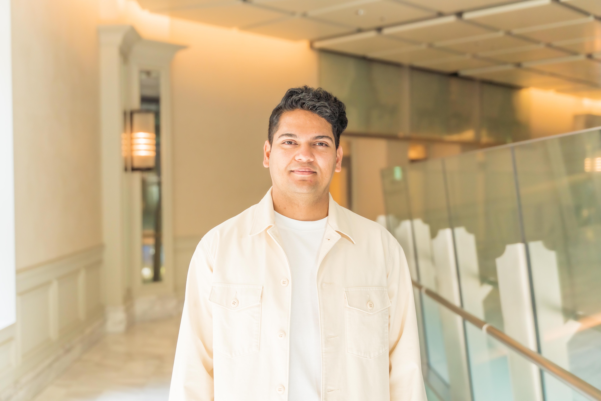

Vishal Chauhan
Doctoral Candidate
Tsukada Laboratory Department of Creative Informatics
The University of Tokyo
Designing interactions for autonomous vehicles, robots, and the smart cities they move through — so humans and machines share space better, with Human Intelligence(HI) in the lead.
- Pedestrian–AV interaction
- Human Intelligence(HI)
- Artificial Intelligence(AI)
- In-cabin HMI
- External HMI (eHMI)
- Shared Space
- Smart cities
- Robotics
About
I'm an HCI researcher studying how humans interact with autonomous vehicles, robots, and intelligent systems — and how these systems can communicate back more clearly. My doctoral work at The University of Tokyo centers on the Smart Pole Interaction Unit (SPIU), an infrastructure-based eHMI I designed to make communication between pedestrians, autonomous vehicles, and robots safer and more intuitive in the spaces they share. I build with AI, but I design for Human Intelligence — the judgment, context, and care that machines don't have.
Along the way, I've been lucky to work alongside inspiring researchers and labs in Japan, Singapore, Canada, Norway, and beyond — collaborations that continue to shape how I think about future cities and the ways humans and machines share them.
Before my PhD, I completed my Master at The University of Tokyo and my Bachelor split between Vel Tech University (India) and Nanyang Technological University (Singapore). I also contribute to Tier IV's open-source autonomous driving platform, working with their engineering team.
Now — exploring human–AV interaction · open to faculty conversations from late 2026 · 16 countries down, with a dream to reach all 195.
Every idea starts as a simple sketch. (tap to replay)
Recent
News.
- Apr 2026 Two papers at CHI 2026 in Barcelona — both received Honourable Mention Awards 🏆.
- Mar 2026 New paper accepted at HCII 2026: Colored Shared Spaces.
- Nov 2025 Presented VRST 2025 in Montréal: cross-cultural VR evaluation of SPIU.
- Sep 2025 IJHCS article on human-vs-LLM perception of eHMI published.
- Sep 2025 Attended CIV Summer School, Blonay, Switzerland.
- Dec 2024 Joined Tier IV as an Autonomous Driving Engineer.
- Aug 2024 Visiting researcher at NTNU Norway.
Research agenda
From human to city.
How should humans interact with autonomous vehicles, robots, and the infrastructure that connects them? I work across four nested scales — each one holds the last. Across all of them, one principle holds: Human Intelligence first(HI), with AI as the tool.
Human
Human perception, trust, and understanding.
Vehicle & robot
eHMI and in-cabin HMI — making a machine's intent legible.
Infrastructure
The Intelligent system with AI.
Society & culture
Shared spaces that hold up across different street cultures.
Service
Peer review.
- Conference IROS, IEEE/RSJ International Conference on Intelligent Robots and Systems.
- Journal IJHCS, International Journal of Human–Computer Studies.
Teaching & mentoring
Teaching & mentoring.
IST Research Assistant · Creative Evolution Project
Curating events and promotional videos for IST School's Creative Evolution Project; designing activities as a volunteer to foster inclusivity; running research-talk sessions among students.
M-BIC Mobility Business Innovation Contest
Team lead for an interdisciplinary student team competing on a mobility business challenge.
Contact
Get in touch.
- name
- Vishal Chauhan
-
vishalchauhan (at) g.ecc.u-tokyo.ac.jp
vishalchauhan (at) outlook.sg - lab
-
Tsukada Laboratory · Room 91B1, Bldg. 2,
Engineering Department, The University of Tokyo
7-3-1 Hongo, Bunkyō-ku, Tokyo 113-8656, Japan - tokyo
- --:-- JST · 35.7128° N, 139.7626° E
- open to
- Feel free to reach out — always happy to chat about a potential collaboration.
- find me
- Google Scholar · ORCID · ResearchGate · GitHub · LinkedIn